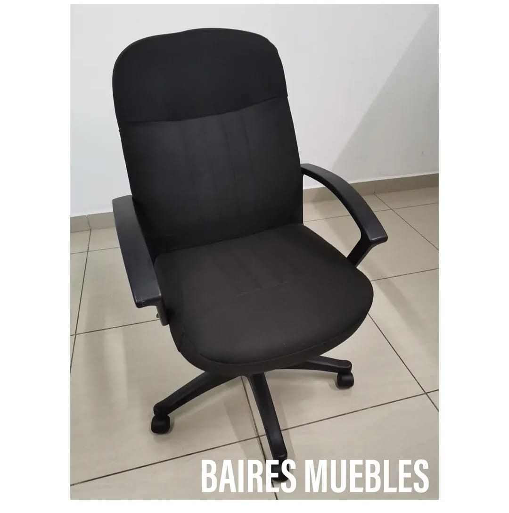
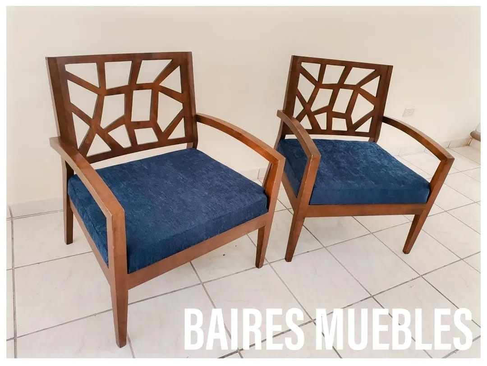
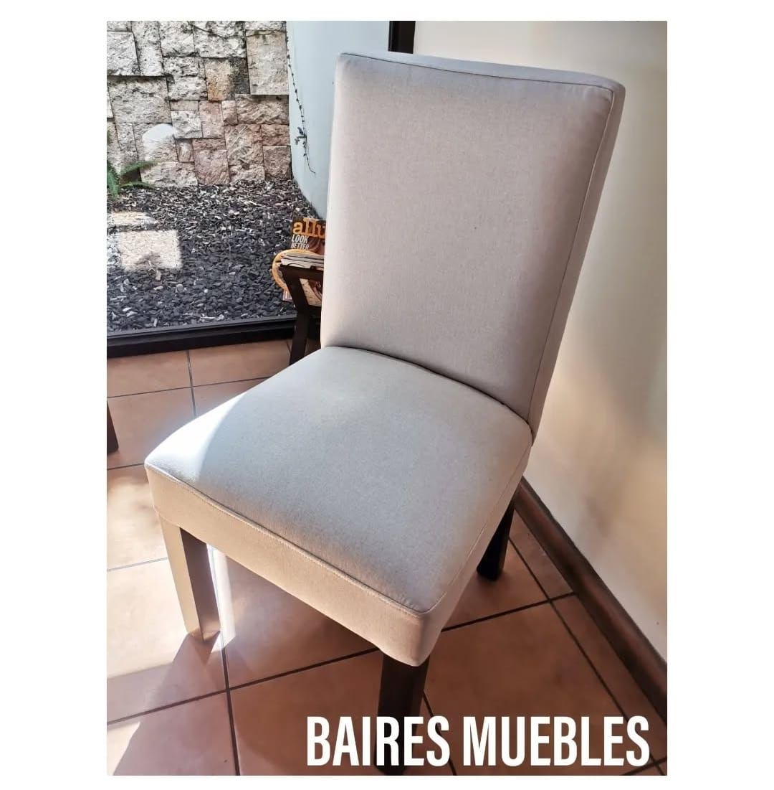

Renovación Completa
Cambio total de tapicería, incluyendo asiento y respaldo
- Selección de tejidos premium
- Relleno de alta densidad
- Acabados profesionales

Reparación Estructural
Refuerzo de estructura y mecanismos
- Reparación de patas y soportes
- Reemplazo de resortes y amarres
- Ajuste de balance y estabilidad

Personalización
Diseño único para tus sillas
- Patrones y colores a medida
- Detalles decorativos especiales
- Acabados exclusivos
Nuestro Proceso
1
Evaluación
Inspeccionamos la silla y discutimos tus necesidades
2
Selección
Elige entre nuestra variedad de tejidos y materiales
3
Restauración
Nuestros expertos trabajan en tu pieza
4
Entrega
Recibe tu silla como nueva